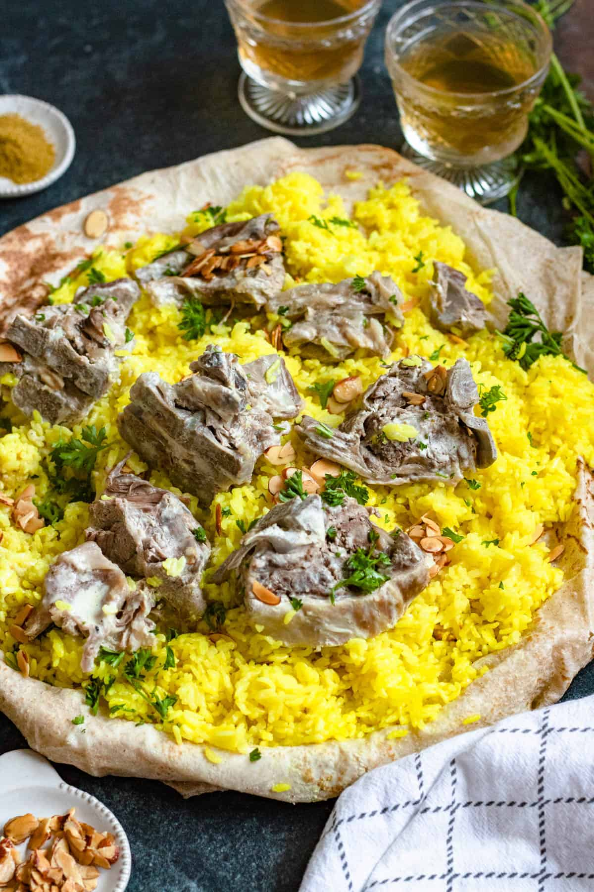

Mansaf

Description
Mansaf is the national dish of Jordan, a celebratory meal made with tender lamb cooked in fermented dried yogurt sauce and served over a bed of rice and flatbread.
This rich and flavorful dish is traditionally enjoyed communally and is a symbol of Jordanian hospitality and culture.
Ingredients
- 2 lbs lamb (bone-in pieces)
- 2 cups jameed or laban (dried yogurt or plain yogurt)
- 1 large onion, chopped
- 2 cups long-grain rice
- 2 tbsp ghee or clarified butter
- 1/2 cup almonds or pine nuts (toasted)
- 1 tsp turmeric
- Salt and pepper
- Flatbread (shrak or markook)
Steps
- Rinse and soak the rice for 30 minutes.
- In a large pot, sauté onions in ghee, then add lamb pieces and brown on all sides.
- Add water and simmer the lamb for 1.5 to 2 hours until tender.
- In a separate pot, dissolve jameed in warm water or use laban/yogurt and bring to a simmer.
- Combine the yogurt mixture with the lamb broth and simmer together for 20 minutes.
- Cook the rice with turmeric, salt, and a bit of ghee.
- Toast almonds or pine nuts in ghee until golden.
- Place flatbread on a large platter, then spread the rice over it.
- Top with the lamb pieces and pour the yogurt sauce generously over the top.
- Garnish with toasted nuts and serve warm.
Home